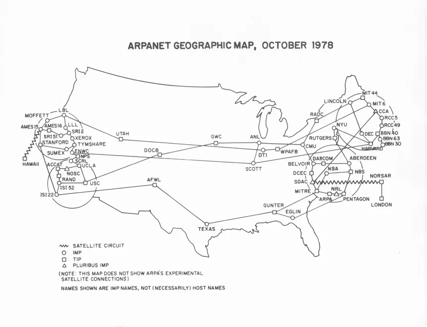

Internet: Internet são diversas redes de computadores conectadas entre si. Web é o ambiente formado por documentos ou sites. Internet é rede de computadores. A internet que provê serviços como e-mail, FTP e troca de mensagens instantâneas.
Web: Web é uma aplicação para rodar nessas redes. A web usa o protocolo HTTP/HTTPS para promover essa transferência de informações e depende de browsers (navegadores como Firefox e Chrome) para apresentar tudo isso ao internauta, permitindo que ele clique em links que levam a arquivos hospedados em outros computadores.
A internet surgiu em 1969 com a ARPANET.
Depois evoluiu e passou a ser usada no mundo todo.
Em 1990 surgiu a Web.

| Item | Descrição |
|---|---|
| Internet | Rede |
| Web | Serviço |
| Fim da tabela | |
Exemplo de texto com sub e sup.
Saiba mais